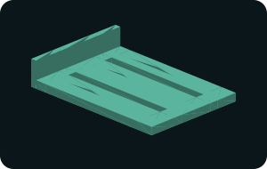

Original CAD geometry · millimetres
Slotted assembly fixture base with fixed end fence
100 × 70 × 20 mm; 6 mm floor; two 6 × 76 mm slots. Download the STL mesh for a geometry reference or edit the OpenSCAD source for your own dimensions.

View the matching base or stop →
Named dimensions
length=100; width=70; base=6; fence=4; height=20; slot_width=6; $fn=64;
Feature layout and design notes
Two X-direction through slots run X12–88 mm with centerlines Y18 and Y48 mm. The fence inside face is X4. Pair with the separately downloadable adjustable stop block and separately selected bolts, washers and nuts. Mount on standoffs or another surface that leaves access below the slots. The plate is not a precision tooling plate and the slots are not T-slots. Print floor down, fence upward; check floor flatness and washer bearing area. All apertures are rectangular slots, not modeled threads. Dimensions are nominal and require printer-specific fit allowance. These original studies have not been physically printed or tested for holding force, accuracy, creep, temperature, coolant resistance or wear. Use for bench layout and fit evaluation only; no powered machining or load rating is established. Check the actual assembly and material before use.
Application references
These sources describe the engineering use case and available commercial product families. They were not used as geometry or dimensional templates for this original educational model.
How to modify this model
Edit the named dimensions, render the boolean geometry in OpenSCAD, and export a fresh STL. Fixed hole locations and offsets in the source may also need adjustment when changing overall sizes. Manufacturing feasibility, fit and performance must be evaluated separately.
Included OpenSCAD source
$fn=96;
length=100;
width=70;
base=6;
fence=4;
height=20;
slot_width=6;
$fn=64;
difference(){union(){
translate([0,0,0]) cube([length,width,base]);
translate([0,0,base]) cube([fence,width,height-base]);
}
translate([12,15,-1]) cube([76,slot_width,base+2]);
translate([12,45,-1]) cube([76,slot_width,base+2]);
}Use and limitations
This is an original educational starting shape, not a manufacturer replacement or standards-compliant component. No fit, material, load, sealing, electrical insulation, fatigue, or wear performance is established. Thin sections and grooves need process-specific review before manufacture. STL contains no units: import as millimetres.
Use this model to practice changing dimensions, comparing sections, and documenting your design choices. Supplier-specific fits and certified performance require the actual supplier drawing and specifications.
License and provenance
Created by MechIntel on October 17, 2026 using procedural geometry. Released under CC0 1.0. No supplier CAD was copied. Geometry and source are supplied without warranty.